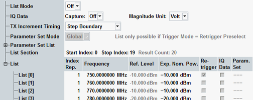
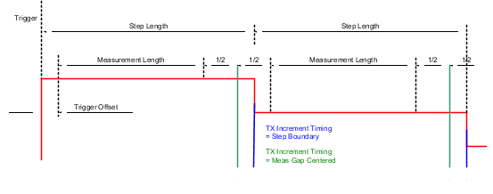
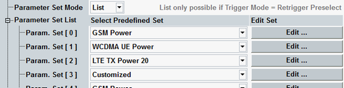
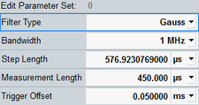
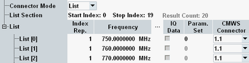
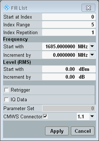

The parameters on the "List Configuration" tab activate and configure the list mode of the GPRF power measurement. See also "Single Step vs. List Mode".

Enables or disables the list mode. "Off" means that the power measurement yields results at a single power and frequency. If the list mode is switched on, the R&S CMW measures a list of power steps in accordance with the list mode settings.
Remote command:Enables or disables the I/Q data measurement. For a general introduction, refer to "I/Q Data Measurement".
Remote command:Selects the physical unit for I/Q measurement results. The R&S CMW returns the I/Q amplitudes either in "Voltage" units (into a 50 Ω load impedance) or as linear "Raw" amplitudes in Int16 format (value range -32768 to +32767). The maximum raw amplitude value (full-scale value) corresponds to the selected reference level (see "Expected Nominal Power").
Irrespective of the selected magnitude unit, it is possible to retrieve the I/Q data in ASCII format or as binary 32-bit IEEE 754 floating point numbers. These data formats are the same as in the "I/Q Recorder" measurement, see "ASCII and Binary Data Formats".
Remote command:Specifies the timing of the "GPRF Meas<i>:Power" trigger that the power measurement provides in list mode.
Trigger signals can either be generated at every "Step Boundary" or in the middle of the gaps between subsequent measurement intervals ("Meas Gap Centered").

- "Global" means that the global settings in the "Measurement Control" section are used for all frequency/level steps, irrespective of the "Parameter Set List".
- "List" is only available if the "Trigger Mode" is set to "Retrigger Preselect". Via the "Parameter Set List" you can define measurement control settings for each retriggered frequency/level step.
The "Parameter Set Mode" can only be changed if the list mode is on.
Remote command:A parameter set is a combination of settings that control the measurement of the individual steps in retriggered list mode.
The list is configurable if the "Parameter Set Mode" is "List".
For each parameter set in the list, you can select a predefined set of settings. If you edit the parameter set manually, the column "Select Predefined Set" indicates "Customized".

- To assign a particular parameter set to a retriggered step: "List > Parameter Set"
- For background information: "List Mode with Variable Parameter Sets"
The "Edit" buttons in the "Parameter Set List" bring up the "Edit Parameter Set" dialog for the respective parameter set.

This parameter is visible for setups with R&S CMWS and for instrument models with integrated connector bench.
It selects, whether the input connector configured in the "RF Settings" is used ("Global"), or whether the input connector is selected individually for each list entry ("List").

Defines the segment range to be used in list mode. The R&S CMW measures all list segments between the "Start Index" and the "Stop Index".
"Result Count" displays the total number of measurement results. It is calculated as the sum of all "Index Rep." values between the start index and the stop index.
The list contains 4000 segments. Only the section between "Start Index" and "Stop Index" is displayed at the GUI.
Remote command:Number of repetitions of a segment. The total number of repetitions for all used segments must not exceed 10000.
Remote command:Frequency, reference level and expected nominal power for a segment. The configured settings are used instead of the corresponding settings on the "RF Settings" tab.
Remote command:Enables retriggering for a segment. Retriggering is only possible with the "Retrigger Preselect" mode (see "Trigger Mode").
Note: If a list step contains an "Index Rep." > 1 in combination with an enabled retrigger, the retrigger setting applies to the first frequency/level step in the index repetition range only. The following list definitions are equivalent.
List [#] | Index rep. | Frequency | Exp. nom. power | Retrigger |
|---|---|---|---|---|
0 | 1 | 1000 MHz | 0 dBm | on |
1 | 1 | 1000 MHz | 0 dBm | off |
2 | 1 | 1000 MHz | 0 dBm | off |
3 | 1 | 1000 MHz | –30 dBm | off |
4 | 1 | 2000 MHz | 0 dBm | on |
5 | 1 | 2000 MHz | 0 dBm | off |
6 | 1 | 2000 MHz | 0 dBm | off |
7 | 1 | 3000 MHz | 0 dBm | on |
List [#] | Index rep. | Frequency | Exp. nom. power | Retrigger |
|---|---|---|---|---|
0 | 3 | 1000 MHz | 0 dBm | on |
1 | 1 | 1000 MHz | –30 dBm | off |
2 | 3 | 2000 MHz | 0 dBm | on |
3 | 1 | 3000 MHz | 0 dBm | on |
Enables the I/Q data measurement for a segment. The I/Q data is available in addition to the other power measurement results and can be retrieved using remote control commands. See "I/Q Data Measurement".
Remote command:Selects one of the predefined measurement control parameter sets. The selection is only possible for segments with active retriggering. The parameter set remains valid until the next retriggered step with a different parameter set is measured. See also "Parameter Set List".
Remote command:This column is only active for "Connector Mode" = "List". It selects the RF input connector to be used for a segment. All input connectors within the list must belong to the same connector bench.
Remote command:The "List Config. > Fill List..." hotkey opens a dialog box which simplifies the configuration of the frequency/level list.
The dialog box configures a range of segments, with a selectable start ("Start at Index") and length ("Index Range").
You can fill this range with an increasing or decreasing frequency and expected nominal power. "Increment by" specifies the step size between two segments.
The other parameters apply the same value to all segments (same index repetition, retrigger state, ...).

n/a